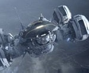

Redley Scott

Nostromo
Prometheus

Covenant
The "Alien" also referred to as a "Xenomorph" is a fictional endoparasitoid extraterrestrial species that is the eponymous antagonist of the Alien film series. The species made its debut in the film Alien (1979), and reappeared in the sequels Aliens (1986), Alien 3 (1992), and Alien: Resurrection (1997), as well as the crossover franchise Alien vs. Predator (2004) and Aliens vs. Predator: Requiem (2007). A similar creature of a slightly different design named the Deacon makes a brief appearance in the Ridley Scott film Prometheus (2012). The classic Xenomorph is set to appear in the sequel to Prometheus, Alien: Covenant (2017).[6][better source needed] In addition, the Alien appears in various literature and video game spin-offs from the franchises.
Unlike many other extraterrestrial races in science fiction, the Aliens are not "tool-makers"; they lack a technological civilization and are predatory creatures with no higher goals than the propagation of their species and the ultimate destruction of lifeforms that could pose a threat to them. Like wasps or termites, Aliens are eusocial, with a single fertile queen breeding a caste of warriors, workers, or other specialists strains. The Aliens' biological life cycle involves traumatic implantation of endoparasitoid larvae inside living hosts; these larvae erupt from the host's chest, orifices or intestines after a short incubation period, rapidly mature from juvenile into adulthood within hours, and seek out more hosts for implantation.
The Alien design is credited to Swiss surrealist and artist H. R. Giger, originating in a lithograph titled Necronom IV and refined for the series' first film, Alien. The practical effects for the Alien's head were designed and constructed by Italian special effects designer Carlo Rambaldi. The species' design and life cycle have been extensively augmented, sometimes inconsistently, throughout each film.
The script for the 1979 film Alien was initially drafted by Dan O'Bannon and Ronald Shusett. Dan O'Bannon drafted an opening in which the crew of a mining ship are sent to investigate a mysterious message on an alien planet. He eventually settled on the threat being an alien creature; however, he could not conceive of an interesting way for it to get onto the ship. Inspired after waking from a dream, Shusett said, "I have an idea: the monster screws one of them," planting its egg in his body, and then bursting out of his chest. Both realized the idea had never been done before, and it subsequently became the core of the film."This is a movie about alien interspecies rape," O'Bannon said in the documentary Alien Evolution. "That's scary because it hits all of our buttons."O'Bannon felt that the symbolism of "homosexual oral rape" was an effective means of discomforting male viewers.
Giger's Alien design, inspired by his earlier print Necronom IV, for the film Alien The title of the film was decided late in the script's development. O'Bannon had quickly dropped the film's original title, Star Beast, but could not think of a name to replace it. "I was running through titles, and they all stank", O'Bannon said in an interview, "when suddenly, that word alien just came out of the typewriter at me. Alien. It's a noun and it's an adjective."The word alien subsequently became the title of the film and, by extension, the name of the creature itself.
Prior to writing the script to Alien, O'Bannon had been working in France for Chilean cult director Alejandro Jodorowsky's planned adaptation of Frank Herbert's classic science-fiction novel Dune. Also hired for the project was Swiss surrealist artist H. R. Giger. Giger showed O'Bannon his nightmarish, monochromatic artwork, which left O'Bannon deeply disturbed. "I had never seen anything that was quite as horrible and at the same time as beautiful as his work" he remembered later.The Dune film collapsed, but O'Bannon would remember Giger when Alien was greenlit, and suggested to director Ridley Scott that he be brought on to design the Alien, saying that if he were to design a monster, it would be truly original.
After O'Bannon handed him a copy of Giger's book Necronomicon, Scott immediately saw the potential for Giger's designs, and chose Necronom IV, a print Giger completed in 1976, as the basis for the Alien's design, citing its beauty and strong sexual overtones. That the creature could just as easily have been male or female was also a strong factor in the decision to use it. "It could just as easily fuck you before it killed you", said line producer Ivor Powell, "[which] made it all the more disconcerting."Fox studios were initially wary of allowing Giger onto the project, saying that his works would be too disturbing for audiences, but eventually relented. Giger initially offered to completely design the Alien from scratch, but Scott mandated that he base his work on Necronom IV, saying that to start over from the beginning would be too time-consuming. Giger signed on to design the adult, egg and chest-burster forms, but ultimately also designed the alien planetoid LV-426 and the Space Jockey alien vessel.
Giger conceived the Alien as being vaguely human but a human in full armor, protected from all outside forces. He mandated that the creature have no eyes, because he felt that it made them much more frightening if you could not tell they were looking at you.Giger also gave the Alien's mouth a second inner set of pharyngeal jaws located at the tip of a long, tongue-like proboscis which could extend rapidly for use as a weapon. His design for the creature was heavily influenced by an aesthetic he had created and termed biomechanical, a fusion of the organic and the mechanic.His mock-up of the Alien was created using parts from an old Rolls Royce car, rib bones and the vertebrae from a snake, molded with plasticine. The Alien's animatronic head, which contained 900 moving parts, was designed and constructed by special effects designer Carlo Rambaldi.Giger and Rambaldi together would win the 1980 Academy Award for Visual Effects for their design of the Alien.
Scott decided on the man-in-suit approach for creating the creature onscreen. Initially circus performers were tried, then multiple actors together in the same costume, but neither proved scary. Deciding that the creature would be scarier the closer it appeared to a human, Scott decided that a single, very tall, very thin man be used. Scott was inspired by a photograph of Leni Riefenstahl standing next to a 6'4" (1.93 m) Nubian. The casting director found 6'10" (2.08 m), rail-thin graphic designer Bolaji Badejo in a local pub. Badejo went to tai chi and mime classes to learn how to slow down his movements.
Giger's design for the Alien evoked many contradictory sexual images. As critic Ximena Gallardo notes, the creature's combination of sexually evocative physical and behavioral characteristics creates, "a nightmare vision of sex and death. It subdues and opens the male body to make it pregnant, and then explodes it in birth. In its adult form, the alien strikes its victims with a rigid phallic tongue that breaks through skin and bone. More than a phallus, however, the retractable tongue has its own set of snapping, metallic teeth that connects it to the castrating vagina dentata."

This creature has no specific name, and has been referred to most often onscreen, and in the credits of each film, simply as the Alien. It was called an alien, and an organism, in the first film. It has also been referred to as a creature, a serpent, a beast,a dragon, a monster, a nasty, or simply, a thing.The term xenomorph (lit. "alien form"—from Greek xeno-, which translates as either "other" or "strange", and -morph, which denotes shape) was first used by the character Lieutenant Gorman in Aliens[4] with reference to generic extraterrestrial life. The term was erroneously assumed by some fans to refer specifically to this creature, and the word was used by the producers of some merchandise. The species' binomial names are given in Latin as either Internecivus raptus (meant as "murderous thief") in the Alien Quadrilogy DVD or Lingua foeda acheronsis (meant as "foul tongue from Acheron") in some comic books. The main Alien from Alien vs. Predator is listed in the credits as "Grid", after a grid-like wound received during the film from a Predator's razor net.
When standing upright, the Aliens are bipedal in form, though depending on their host species, they will either adopt a more hunched stance, or remain quadrupedal when walking or sprinting. Their overall stance and general behavior is a result of the mixture of the DNA of the embryo and the host. They have a skeletal, biomechanical appearance and are usually colored in muted shades of black, gray or bronze. Their body heat matches the ambient temperature of the environment in which they are found, so they do not radiate heat, making them indistinguishable from their surroundings through thermal imaging.In most of the films, adult Aliens are capable of running and crawling along ceilings and walls.They have great physical strength, having been shown to be capable of breaking through welded steel doors in numbers.
Aliens have segmented, blade-tipped tails. The sharp tip was initially a small, scorpion-like barb,but from Aliens onwards the blade design increased in size and changed in appearance to more closely resemble a slashing weapon.From Alien: Resurrection onwards, the tails have a flat ridge of spines at the base of the blade. This was introduced to help them swim convincingly,and was left intact in the subsequent cross-overs. The original shooting script for Aliens and the novelization both featured a scene in which Lieutenant Gorman is "stung" by the barb tail and rendered unconscious; in the final cut of the movie, Gorman is knocked out by falling crates. As a weapon, the strength of the tail is very effective, having been shown to be strong enough to impale and lift a Predator with seemingly little effort.
They have elongated, cylindrical skulls, but possess no visible eyes, though in the original Alien film, the top of the creature's head was translucent, with empty, human-looking eye sockets within. In the novelization of Alien, the character Ash speculates that the Xenomorphs "see" by way of electrical impulse, similar to a shark's lateral line. This method is illustrated in the original Alien vs Predator PC game, and reused for the "Predalien" 28 years later. There is a cyclopean species of Xenomorph, which is the creature in its original form, it has a single large eye under its natural silicon / keratin forehead which can give the creature 180 degree vision. The larval stage or "facehugger" does have a single eye. Whatever the original host was is unknown, it must have been something on the Xenomorph's home planet. The Aliens' inner set of jaws are powerful enough to smash through bone and metal.How the creatures see is uncertain; in Alien 3, a spherical lens was used to illustrate the Alien's point of view, so, when the film was projected anamorphically, the image exhibited severe distortion. In the novelization of the movie Alien, the creature is held mesmerized by a spinning green light for several minutes.
In Aliens, the adult creatures have a more textured head rather than a smooth carapace. In the commentary for Aliens, it was speculated that this was part of the maturation of the creatures, as they had been alive far longer than the original Alien, although James Cameron stated that he simply left the carapace off because he liked them better that way.The smooth design of the carapace would be used again in Alien 3 and Alien: Resurrection, although made narrower with a longer muzzle and more prominent chin. This design would be kept in Alien versus Predator, and abandoned in Aliens vs. Predator: Requiem in favor of the ribbed design.
Throughout their appearances, human-spawned Aliens have been shown to have different numbers of fingers. In Alien, the creature has webbed, six-fingered hands. In Aliens, the number of fingers is reduced to three (two "paired" and a single, opposable thumb), and they are shown to be much longer and more skeletal. In Alien: Resurrection, the number of digits is increased to four, with two long middle fingers and a pair of thumbs. This design is kept in the Alien vs. Predator films, though the hands were made bulkier in order to make the Aliens seem more formidable against the Predators.
Aliens have been alternatively portrayed as both plantigrade and digitigrade organisms, usually relative to their host. Human-spawned Aliens were usually portrayed as having humanoid hind limbs, while in Alien 3, the featured Alien sported double-jointed legs due to its quadrupedal host. This characteristic would be continued in Alien: Resurrection for the human-spawned Aliens. Tom Woodruff, who had previously played the "dog-alien" in Alien 3, described the human-spawned Aliens in Resurrection as feeling more like a dog than the previous creature, despite having been born from human hosts.The human-spawned Alien warriors would revert to a plantigrade posture in Alien vs. Predator.

Alien blood is an extremely potent acid and is capable of corroding almost any substance on contact with alarming speed. It is dull yellowish-green in color, and appears to be pressurized inside the body so that it spurts out with great force when the creature is wounded. Ron Cobb suggested the idea of the Alien having acid blood as a plausible means to make the creature "unkillable"; if one were to use traditional firearms or explosives to attack it, its blood would eat through the hull of the ship.The Alien novelization suggests that, at least at the "facehugger" stage, the acid is not blood but a fluid maintained under pressure between a double layer of skin.In the Aliens vs. Predator: Requiem documentary: "Science of the Alien," it is theorized that the Aliens' acid blood could be some type of "hydrosulphuric acid" compound due to its corrosiveness and the conspicuously toxic effects on living human tissue. The documentary also speculates that Aliens are immune to their own acidic and toxic liquids due to an endobiological build-up, similar to the human stomach's ability to protect itself from its own digestive fluids. The documentary takes this theory one step further and speculates that the Alien organisms' protection system against its own toxic hydrosulphuric acid is basically a bio-organically produced Teflon insulation.[24] In the original Alien, the facehugger is shown to be able to "spit" acid, dissolving the faceplate of Kane's helmet and allowing the creature immediate access inside. This ability is also exhibited by adult Aliens in Alien 3 and Alien: Resurrection; much like a spitting cobra, they use it to blind and immobilize their victims.
Aliens can produce a thick, strong resin that they use to build their hives and to cocoon their victims, and they can use the walls of their hives as camouflage. Aliens also salivate heavily in the form of a sticky, clear slime; while not a toxic substance in and of itself, it is common for the Alien films to use it as a suspense-building device, wherein a character will notice the falling saliva before noticing its source lying in wait above them.
During events in Aliens on the LV-426 colony, in Alien: Resurrection on the USM Auriga and in the crossover movie Alien vs Predator, the species displayed observational learning and problem solving skills, and in the former two cases the Aliens learn how to operate machinery at a very basic level. On LV-426, they were able to cut power in a section of the complex to gain access to the humans, and the Alien Queen learns to board an elevator by observing Ripley and Newt escaping in the one beside it. The novelization of the film notes that the queen establishing her "nest" at the base's main power plant could have been chosen either for the feral, animal reason of the warmth that it would provide or for the rational reason of selecting a location where any attackers would be unable to destroy her without destroying the entire facility. In the director's commentary for Aliens, James Cameron noted that the creatures in Aliens had been alive for far longer than the Alien in the original, and had more time to learn about their environment.On the USM Auriga in Alien: Resurrection, the Aliens kill one of their own, using its blood to melt through their enclosure and escape; in Alien vs. Predator, they use a similar strategy to free the queen from her chains. An Alien also uses acid spurting from its severed tail as an improvised weapon, indicating they are fully aware of the effects of their acid blood.

Aliens are eusocial life-forms with a caste system ruled over by a queen.Their life cycle comprises several distinct stages: they begin their lives as an egg, which hatches a parasitoid larval form known as a facehugger, which then attaches itself to a living host by, as its name suggests, latching onto its face. In the Alien 3 novelization, Ripley commented that this parasitoid would likely be able to use a host as small as a cat, or as large as an elephant.
The facehugger then "impregnates" the host with an embryo, known as a "chestburster,"which, after a period of gestation, erupts violently from the host's chest, resulting in the death of the host.
The chestburster then matures to an adult phase, shedding its skin and replacing its cells with polarized silicon. Due to horizontal gene transfer during the gestation period, the Alien also takes on some of the basic physical attributes of the host from which it was born, allowing the individual alien to adapt to the host's environment.
The adult phase of the Alien is known by various different names. The adult Aliens have been referred to as "drones," "warriors," "workers," and sometimes "soldiers," similar to the way ants have been defined. The names of the adult phase have also been used to name different types of adult phases of the Alien in numerous sources, including video games, comic books, novels, and the films, but only in the commentaries by the team who created the films. No official name has been given to the adult stage of the Alien in the films themselves.
Queen Aliens are significantly larger and stronger than the normal adults, being approximately 4.5 metres (15 ft) tall.Their body structure differs also, having two pairs of arms, one large and one small. The queen's head is larger than those of other adult Aliens, and is protected by a large, flat crest, like a crown, which varies from queen to queen. Unlike other aliens, the queen's external mouth is separately segmented from the rest of her head, allowing her to turn her mouth left and right almost to the point where it is facing perpendicular to the direction of the rest of her head. In the second film, Aliens, unlike other adults and queens, the queen had high-heel protrusions from her feet.
Egg-laying Alien queens possess an immense ovipositor attached to their lower torso, similar to a queen termite's. Unlike insect queens, there appears to be no need for an Alien queen's eggs to be fertilized.When attached to her ovipositor, the queen is supported by a "biomechanical throne" that consists of a lattice of struts resembling massive insect legs.
In the original cut of Alien, the Alien possessed a complete lifecycle, with the still-living bodies of its victims converted into eggs. However, the scene showing the crew converted into eggs was cut for reasons of pacing, leaving the ultimate origin of the eggs obscure. This allowed Aliens director James Cameron to introduce a concept he had initially conceived for a spec script called Mother, a massive mother Alien Queen which laid eggs and formed the basis for the Aliens' life cycle. Cameron conceived the Queen as a monstrous analogue to Ripley's own maternal role in the film.In that vein, some critics have compared it to Grendel's mother.
The design of the queen was created by Cameron in collaboration with special effects artist Stan Winston, based upon an initial painting Cameron had done at the start of the project. The Winston Studio created a test foam core queen before constructing the full hydraulic puppet which was used for most of the scenes involving the large Alien. Two people were inside working the twin sets of arms, and puppeteers off-screen worked its jaws and head. Although at the end of the film, the queen was presented full-body fighting the power-loader, the audience never sees the legs of the queen, save those of the small-scale puppet that appears only briefly. In Aliens, Cameron used very selective camera-angles on the queen, using the 'less is more' style of photography. Subsequently, the movie won an Oscar for Visual Effects. An adult queen was to reappear in Alien: Resurrection. The original mechanical head previously used in Aliens was provided by Bob Burns and was an altered design. It was repainted with a blend of green and brown, giving it a shimmering, insect-like quality. This color concept would be abandoned in Alien vs. Predator in favour of the original black color scheme.
In the climax of Alien vs. Predator, the queen's basic design was altered to make her more "streamlined" in appearance and her overall size was increased to 6 meters (20 feet) tall. Other changes include the removal of the "high-heel" protrusions on her legs, including additional spines on her head and making her waist thinner because there was no need for puppeteers inside her chest. The animatronic queen had 47 points of hydraulic motion.
Aliens vs. Predator: Requiem (2007) introduced a younger form of the full-grown queen, albeit with traits inherited from its Predator host. Recalling the facehugger's method of embryo implantation, the Predalien uses its inner mouth to directly deposit multiple chestburster embryos into pregnant female hosts, also using its mandibles to latch on the faces of said hosts, completely bypassing the need for facehuggers.This is explained by the Brothers Strause as a means of quickly building an army of Aliens before the young queen evolves into its sedentary, egg-laying state.
The eggs laid by the queen are ellipsoidal, leathery objects between two and three feet high with a four-lobed opening at the top. As a potential host approaches, the egg's lobes unfold like flower petals, and the parasitic facehugger extracts itself from the egg and attaches itself to the potential host. Giger initially designed the eggs with a much more obvious vaginal appearance, complete with an "inner and outer vulva".The producers complained that Catholic countries would ban the film if the allusion was too strong, so Giger doubled the lobes to four so that, in his words, "seen from above, they would form the cross that people in Catholic countries are so fond of looking at." The interior of the original egg was composed of "Nottingham lace" (caul fat), which is the lining of a cow's stomach. In the first film, the quick shot of the facehugger erupting from the egg was done with sheep's intestine. Initially, the egg remained totally stationary except for the hydraulic movement of the lobes; however, by Alien: Resurrection, the entire egg was made to ripple as it opened.
A facehugger is the second stage in the Alien's life cycle. It has eight long, finger-like legs, which allow it to crawl rapidly, and a long tail adapted for making great leaps. These particular appendages give it an appearance somewhat comparable to chelicerate arthropods such as arachnids and horseshoe crabs.
The facehugger is a parasitoid; its only purpose is to make contact with the host's mouth for the implantation process, by gripping its legs around the victim's head and wrapping its tail around the host's neck. Upon making contact, the facehugger administers a cynose-based paralytic in order to render it unconscious.During a successful attachment, the facehugger will insert a proboscis down the host's throat, supplying it with oxygen while simultaneously implanting an embryo. Attempts to remove facehuggers generally prove fatal,as the parasitoid will respond by tightening its tail around the host's neck, and its acidic blood prevents it from being cut away. In addition, its grip on the host's head is strong enough to tear the host's face off if it is forcibly removed.
Once the Alien embryo is implanted, the facehugger detaches, crawls away and dies.
According to AVP2: Science of the Xenomorph, a behind-the-scenes documentary on Aliens vs. Predator: Requiem, it is theorized that facehuggers may implant a viral agent that "commands" the host's cells to grow the chestburster, as opposed to an implanted embryo.
Giger's original design for the facehugger was a much larger creature with eyes and a spring-loaded tail. Later, in response to comments from the filmmakers, Giger reduced the creature's size substantially.At first, Giger assumed that the facehugger would wrap around the outside of the astronaut's helmet, but Scott decided that it would have far more impact if the facehugger were revealed once the helmet was removed. Scott and Giger realised that the facehugger should burn through the helmet's faceplate with its acid blood; subsequent redesigns of the space helmet included a far larger faceplate to allow for this.Dan O'Bannon initially conceived the facehugger as somewhat resembling an octopus, possessing tentacles. However, when he received H. R. Giger's designs, which substituted tentacles with fingerlike digits, he found Giger's design concept to be superior. Since no one was available at the time, O'Bannon decided to design the facehugger prop himself. The technical elements of the musculature and bone were added by Ron Cobb. Giger's initial design for the smaller facehugger had the fingers facing forward, but O'Bannon's redesign shifted the legs to the side. When the foam rubber sculpture of the facehugger was produced, O'Bannon asked that it should remain unpainted, believing the rubber, which resembled human skin, was more plausible.
In Aliens, the facehuggers were redesigned by Stan Winston so that they would be capable of movement. Unlike the creatures in the first film, the creatures would take a much more active role in impregnating their victims. When Ripley throws one off her, the facehugger was now capable of scuttling across the floor and leaping at its prey, wrapping its tail around the victim's throat. Due to the film's budget, only two fully working facehuggers were built.
In Alien 3, another addition, a "super-facehugger" that would carry the embryo of the queen Alien, was planned, but ultimately dropped. The super-facehugger is briefly glimpsed in the Assembly cut of Alien 3, but not identified as such. It made a brief appearance in the canonical Alien book called Alien: Sea of Sorrows, set a while after the events of Alien: Resurrection, about the descendent of either Ellen Ripley or her clone.
After implantation, facehuggers die and the embryo's host wakes up afterwards showing no considerable outward negative symptoms, and a degree of amnesia regarding events at the time of implantation. Symptoms build acutely after detachment of the facehugger, the most common being sore throat, slight nausea, increased congestion, and moderate to extreme hunger.In later stages where the incubation period is extended in preparation of a queen birth, symptoms will include a shortness of breath, exhaustion, and hemorrhaging detectable through biological scanners and present in nosebleeds or other seemingly random bleeding incidents, as well as chest pains inflicted either in lack of chest space due to the chestburster's presence, or even premature attempts to escape the host. The incubating embryo takes on some of the host's DNA or traits, such as bipedalism, quadrupedalism,possessing the mandibles of a Predator,and other structural changes. According to Weyland-Yutani scientists in Aliens: Colonial Marines, the chestburster will draw nutrients from the host's body in order to develop a placenta as it grows, attaching itself to several major organs in the process. The placenta has cancerous qualities, such that even if the embryo were removed surgically, the placenta would simply cause the affected organs to shut down, resulting in death. Over the course of 1–24 hours — indeterminable in some cases, and sometimes up to a week, in the case of some queens — the embryo develops into a chestburster, at which point, it emerges, violently and fatally ripping open the chest of the host. There is no on-screen explanation of the reasons for the different incubation times.
The chestburster was designed by Alien director Ridley Scott and constructed by special effects artist Roger Dicken.Giger had produced a model of a chestburster that resembled a "degenerate plucked turkey" and was far too large to fit inside a ribcage. Much to Giger's dismay, his model reduced the production team to fits of laughter on sight. Scott drafted a series of alternative designs for the chestburster based on the philosophy of working "back from the adult to the child" and ultimately produced "something phallic."The chestburster in the original Alien was armless, but arms were added in Aliens to facilitate the creature crawling its way out of its host's corpse.This concept would be abandoned in Alien: Resurrection and subsequent films.
When a chestburster erupts from the body of its host, it is less than 1 foot (30 cm) tall. However, it soon undergoes a dramatic growth spurt, reaching adult size in a matter of hours; in Alien, the chestburster had grown to 2 metres (6.6 ft) in height by the time the Nostromo crew located it again.The chestburster is shown to have molted before reaching maturity.In Aliens vs. Predator: Requiem, Alien warriors are shown who are still growing, showing shedding skin. In the unrated cut, the Predalien is shown wiping off its final molted skin at the film's start.